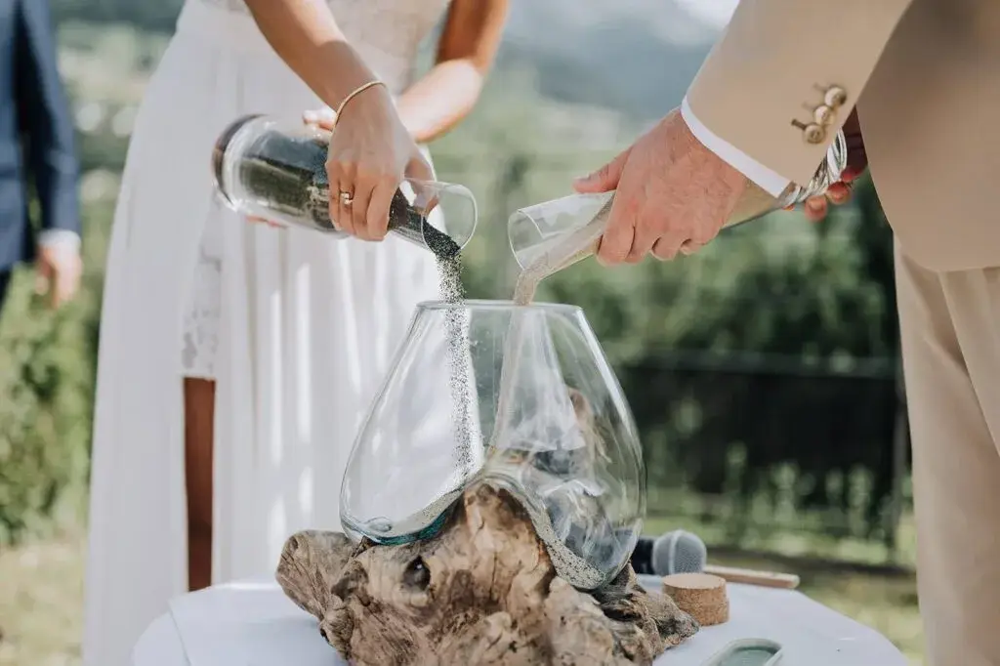
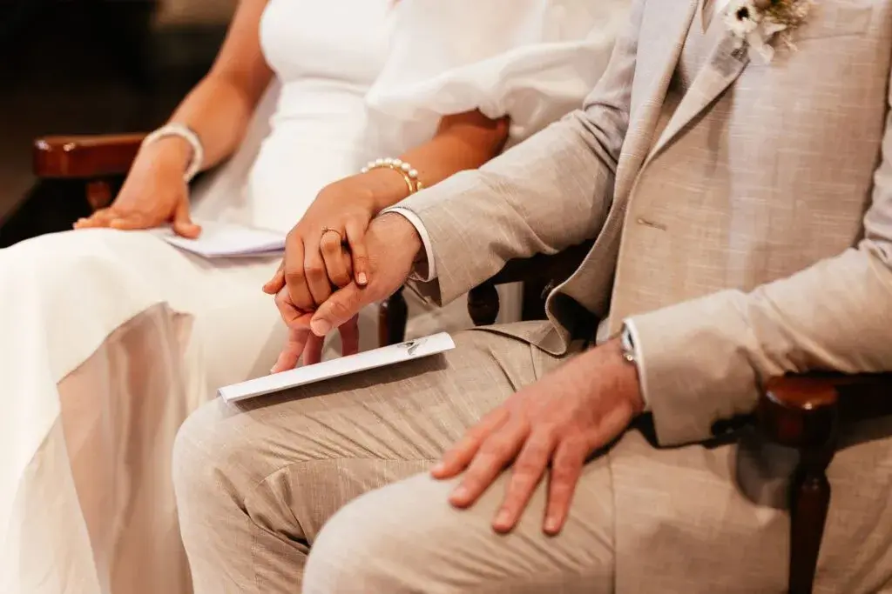
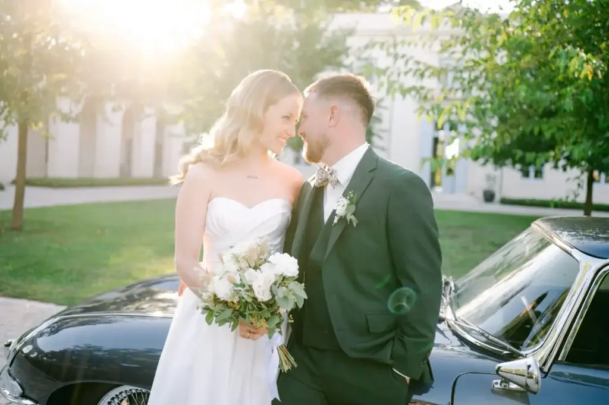
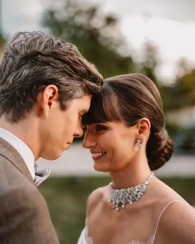
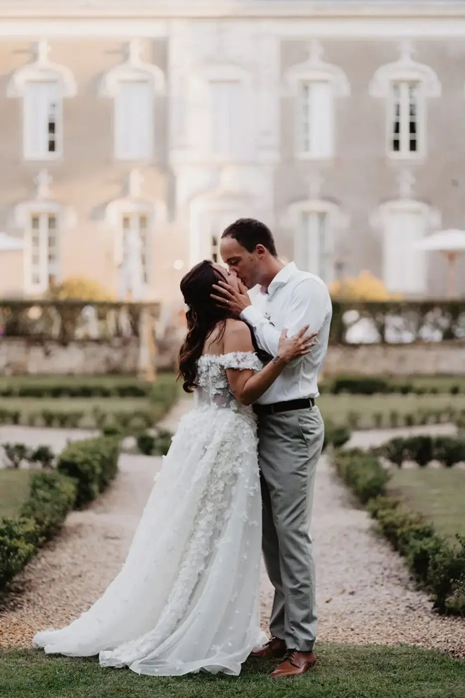

The rhythm of a wedding: the invisible secret that turns a beautiful day into an unforgettable memory
Between emotions, pauses and suspended moments, discover why the rhythm of a wedding matters as much as its decor, its venue or its meal.
Planning a wedding often means thinking about the big essentials: the venue, the decor, the caterer, the dress, the flowers, the music… Every detail is carefully chosen to create a harmonious day that reflects the couple.
Yet there is one essential element that is rarely talked about. An invisible element that guests don't consciously notice, but which deeply shapes how they experience the day.
That element is rhythm.
A wedding could be compared to a film. The sets may be magnificent, the actors talented and the soundtrack exceptional. But if the rhythm is wrong, the emotion doesn't take hold. Some scenes feel too long, others pass too quickly, and the audience ends up switching off.
A wedding works in exactly the same way.

It is not simply a sequence of steps: a ceremony, a drinks reception, a dinner, an evening of dancing. It is a story told throughout the day, with its highlights, its pauses, its surprises and its quieter moments.
And it is often this carefully considered rhythm that makes your guests say: “The day went by so fast… but I feel like I lived so much.”
Rhythm: the ingredient nobody sees… but everyone feels
When you ask guests why they loved a wedding, they rarely mention the schedule of the day.
They talk about the atmosphere, the emotion of the ceremony, a particularly moving speech or the feeling that everything flowed naturally.
Yet behind this impression of ease lies real organisation, because a wedding is not just a collection of services. It is an experience. And like any experience, it has its own tempo.
There are moments meant to stir emotion. Moments when everyone needs to breathe. More festive sequences. Others more intimate.
The aim is never to fill every minute of the schedule. Quite the opposite. An overloaded wedding can quickly become tiring, for the couple and their guests alike.
On the other hand, a rhythm that is too slow can create lulls and let the energy drop. Finding the balance is a true art.
A day that breathes is a day you savour
In everyday life, we often find ourselves racing against time. Your wedding day shouldn't feel like that.
And yet many couples imagine an extremely packed programme.
One activity after another. Non-stop photos. Constant moving around. Surprises every half hour.
With a single idea in mind: never leave an empty moment.
But these “empty” moments are not mistakes. They are essential. They let guests chat, reconnect, share a drink and laugh together. They also give the couple a few minutes to take in what they are living.
These pauses give value to the highlights.
Without them, emotions follow each other so quickly that they end up blurring together. A successful wedding is not a race against the clock.
It is a day that takes the time to exist.

Every highlight deserves its own space
The ceremony, the drinks reception, the dinner, the speeches and the first dance.
These moments are often seen as simple steps in the schedule. In reality, each one carries its own emotion.
The ceremony is a moment of focus and depth. The drinks reception brings a sense of release: guests mingle, discover the venue and enjoy the atmosphere. Dinner brings people together. The speeches create unexpected emotions, and the evening celebrates.
If these moments follow each other too quickly, they lose part of their intensity.
Giving emotions time to settle is essential. It is a little like listening to a piece of music: the silences between the notes matter as much as the notes themselves. They create depth.
A wedding works in exactly the same way.

The most beautiful memories are often born between two moments
When couples talk about their wedding a few months later, their most precious memories don't always match the officially planned moments.
They mention a look exchanged just after the ceremony, a few minutes alone at sunset, an impromptu chat with their grandparents, or a fit of giggles backstage before walking into the reception.
These moments weren't in the schedule, and yet they often become the most precious memories.
Why?
Because they are spontaneous. They leave room for life. They remind us that a wedding is not a perfectly orchestrated show.
It is a deeply human day.
The wedding planner's role: orchestrating the rhythm without anyone noticing
When everything seems natural on a wedding day, it is usually because a great deal of preparation was done beforehand.
One of a wedding planner's most discreet, yet most valuable, tasks is precisely to design the rhythm of the day.
It is not just about drawing up a schedule with precise times: it is about building a real experience.
Every transition is thought through. Every move is anticipated. Every highlight is placed at the right moment so that emotions can settle naturally, without haste.
Guests never see this work. They simply feel that everything flows smoothly.
They move from one space to another without needless waiting. Entertainment arrives at the right moment, speeches don't break the mood, and photos are taken without monopolising the couple for hours.
Everything seems effortless, and yet behind this impression of simplicity lies true orchestration.
Like a conductor who plays no instrument but makes sure each musician comes in at exactly the right moment, the wedding planner looks after the overall balance of the day.
The goal is not to do more and more.
The goal is to get it right.
The most common rhythm mistakes
When planning a wedding, some mistakes come up again and again.
The first is wanting to fill every minute. For fear that guests will get bored, some couples pile on entertainment, surprises, speeches and activities.
The intention is lovely, but when highlights follow one after another, no moment becomes truly exceptional.
Emotion needs space. Guests need to chat, laugh together, enjoy the venue, get a drink, admire the decor or simply watch the couple.

A second pitfall is planning waiting times that are too long. A two-hour photo session while guests wait, a drinks reception cut short, a dinner that starts very late. These situations create a break in the energy of the day.
Finally, there is a subtler mistake: forgetting the couple themselves. Sometimes the newlyweds spend their wedding running around. They go from photos to greetings, entertainment, speeches and outfit changes without ever taking time to stop.
The result: they sometimes feel their wedding was over in a few minutes.
Offering pauses means offering memories
We often imagine that memories are born during the big moments. Yet the most precious memories often appear between two sequences. A few moments after the ceremony, an impromptu walk through the estate's grounds, the calm before entering the reception, the sunset.
A few minutes alone before the evening begins.
These pauses allow emotions to find their place. They also give the couple a chance to take in what they are living. A wedding is an exceptional day, but it goes by incredibly fast. Deliberately creating a few interludes helps slow that feeling down.
These moments often become the couple's favourite photographs, because they capture something real. Not a pose: an emotion.

Rhythm also shapes the guest experience
A successful wedding is not just about beautiful decor or an excellent meal. What guests remember above all is how they felt.
And that feeling largely depends on the rhythm of the day. When everything flows, guests naturally feel at ease. They don't feel they are waiting, they don't check their watch, they simply enjoy the present moment.
This sense of comfort is almost invisible.
Yet it completely changes how a wedding is perceived.
Conversely, an unbalanced rhythm quickly creates fatigue. Guests switch off, the energy drops and conversations fade.
Even a magnificent venue cannot make up for a poorly planned day.
Rhythm then becomes one of the most important elements of the guest experience.
Accepting that not everything can be perfectly controlled
Planning a wedding requires a great deal of anticipation, but there is one thing nobody can ever fully control.
Life.
A speech may run a little longer, the sunset may be more spectacular than expected, guests may linger over their conversations during the drinks reception. And that is perfectly fine.
A schedule is not a stopwatch, it is a common thread. It should provide structure while leaving room for spontaneity. The most beautiful weddings are often those that know how to welcome the unexpected. Because it is precisely these small unplanned moments that create the most sincere memories.

Taking the time to live your own wedding
Many couples say the same thing after their wedding: “It feels like it was all over in an hour.” And this feeling is normal.
Emotions speed up our perception of time. But it is possible to soften it. By giving yourselves a few moments together, looking around the room before the guests arrive, taking a few minutes to breathe after the ceremony, watching your loved ones laugh together, or truly savouring the meal. These moments are not wasted time; on the contrary, they are the most precious of the day.
Because a wedding isn't measured only by the amount of entertainment or the run of the schedule. It is measured by the quality of the memories you create.
A successful wedding is one that finds its balance

There is no universal rhythm.
Every wedding has its own personality.
An intimate wedding in a family home will never follow the same tempo as a reception for two hundred guests in a château. And that is precisely what gives the occasion all its beauty.
The rhythm must adapt to the couple: to their wishes, their loved ones and their story.
This personalisation is what creates a truly unique day. A day where every emotion naturally finds its place. Where the highlights are enhanced by the quieter moments, and where guests feel that everything unfolded effortlessly.
Without ever imagining all the invisible work behind that harmony.
In short
When we think of a wedding, we instinctively picture an exceptional venue, refined decor or an elegantly laid table. Yet the most beautiful memories are born not only from what we see, but from what we feel.
The rhythm of a wedding is the invisible thread that links every moment, every emotion and every encounter. It creates a day that is smooth, sincere and deeply human. Because, in the end, a successful wedding is not one where everything is perfectly timed, but one where everyone forgets about time.
One where guests leave feeling they have experienced far more than a reception: they leave with an emotion. And it is precisely this emotion that, years later, will stay etched in their memory.
Lovely Day Event offers several services
Wedding planning
I step in at every stage of your preparations and guide you through your choices, bringing ideas and suggestions so that your wedding looks like no one but you.
Wedding design
Creative and passionate, I am a certified Wedding Designer and I create a scenographic atmosphere that matches the theme of your wedding.
On-the-day coordination
I will be the conductor of your day, managing the suppliers, the set-up of your decor and the smooth running of this beautiful day.